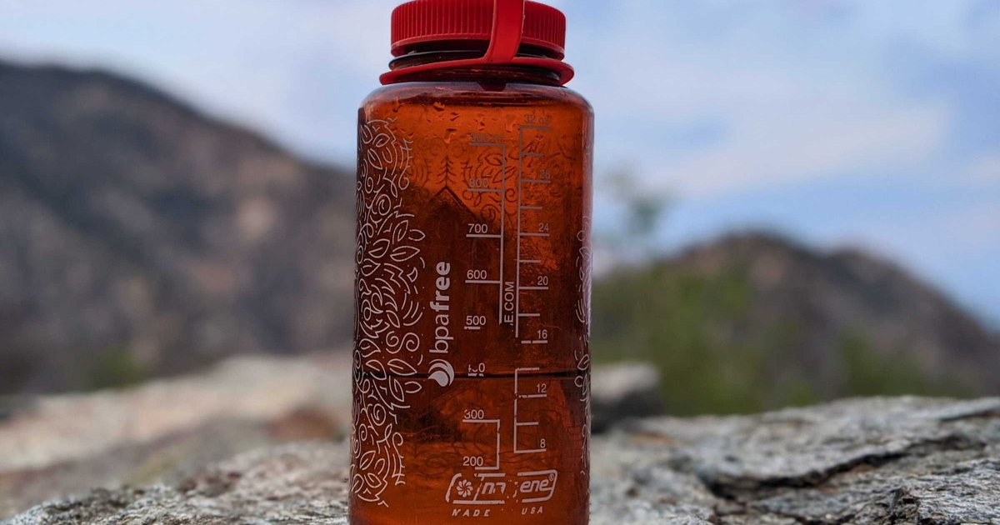

I learned about altitude hydration the hard way. I flew from Miami, which is at sea level, to Denver, which is about a mile high, for a weekend of hiking. I thought I was prepared. I brought my water bottle. I drank when I was thirsty. By the second day, I had a pounding headache, my lips were cracked, and I felt like I couldn’t catch my breath. I thought it was altitude sickness. It was partly that. But mostly, it was dehydration. At sea level, you lose about 500‑800 milliliters (17‑27 ounces) of water overnight through breathing and skin. At 1,600 meters (5,200 feet), that loss increases by about 30%. At 3,000 meters (10,000 feet), it doubles. You’re breathing faster because the air has less oxygen. You’re exhaling more humidified air. That moisture comes from your body. You’re also sweating more because the air is dry, even if it’s cold. And here’s the kicker: at high altitude, your thirst sensation is blunted. You don’t feel as thirsty as you should, even though you’re losing more fluid. That combination — higher losses, lower thirst — is a recipe for dehydration. I see it all the time in skiers, hikers, and climbers. They assume their headache is from the altitude, so they take ibuprofen and lie down. But often, the headache is from dehydration. Drink water, and it goes away. The science is straightforward. For every 1,000 meters (3,300 feet) above 2,500 meters (8,200 feet), you need about 10‑15% more fluid. So at 3,000 meters, add 10%. At 4,000 meters, add 20%. At 5,000 meters (like Everest base camp), add 30‑40%. That’s on top of your baseline needs for your weight, climate, and activity. Let me do an example. A 70‑kilogram (154‑pound) person at sea level needs about 2.5 liters (85 ounces) of total fluid per day for light activity. At 3,000 meters, that same person needs about 2.75 to 3 liters (93‑101 ounces). At 4,000 meters, 3 to 3.25 liters (101‑110 ounces). If they’re hiking or skiing, add another 500‑1,000 mL per hour of exercise. I was hiking for four hours a day in Denver at 1,600 meters, which is below the threshold, but still higher than sea level. My needs increased by about 15%. I wasn’t drinking enough because I didn’t feel thirsty. My urine was dark amber by afternoon. That’s why I felt like garbage. The other factor is dry air. High‑altitude environments are usually low in humidity. Your sweat evaporates instantly, so you don’t feel wet. You don’t realize you’re sweating. But you are. A study of hikers in the Himalayas found that they lost 3‑5 liters of fluid per day through insensible losses alone, not counting sweat. That’s massive. So what do you do? First, force fluids. Don’t wait for thirst. Set a timer. Drink 250 mL (8 ounces) every hour, even if you’re not thirsty. Second, add electrolytes. You’re losing sodium and potassium through sweat and respiration. A pinch of salt in your water or an electrolyte tablet helps. Third, monitor your urine color. Pale straw is the goal. If it’s dark yellow or amber, you’re behind. I had a client named Steve who went on a ski trip to Colorado. He came back with a terrible headache and said the altitude had “destroyed” him. I asked how much he drank. He said, “Maybe a bottle of water a day, plus beer.” That’s not altitude sickness. That’s dehydration. We ran the numbers. His needs at 3,000 meters with skiing were about 4 liters (135 ounces) per day. He was drinking less than 1 liter. No wonder he felt awful. The next year, he prepped. He drank 500 mL of water before leaving his hotel room each morning. He carried a 1‑liter bottle on the slopes and finished it by lunch. He drank another liter in the afternoon and another with dinner. He added electrolytes to his morning bottle. His headache never came. He said it was the best ski trip of his life. Altitude also affects your sleep. At high elevation, you breathe more shallowly and wake up more often. Those frequent awakenings increase insensible water loss because you’re breathing more total volume over the night. So you wake up even more dehydrated than at sea level. That’s why many people wake up with a dry mouth and a headache in mountain towns. The fix is to keep water by your bed and drink whenever you wake up. I also recommend a humidifier in your room. Adding moisture to the air reduces the amount of water you lose through breathing. Another trick is to avoid alcohol at high altitude. Alcohol suppresses vasopressin, increases urine output, and worsens dehydration. A beer at sea level might have a net hydration of 79% of its volume. At altitude, that net might be even lower because your body is already stressed. I’m not saying don’t drink. Just drink extra water to compensate. The acclimatization process takes 3‑5 days. During that time, your body produces more red blood cells to carry oxygen. That requires water. So you’re not just replacing losses; you’re also supporting a physiological adjustment. Fluid needs remain elevated even after you’ve adjusted. I have a client who climbs mountains as a hobby. He uses a simple rule: at sea level, 3 liters per day. At 2,500 meters, 3.5 liters. At 3,500 meters, 4 liters. At 4,500 meters, 4.5 liters. He adds electrolytes at the higher elevations because he knows he’s losing sodium. He’s never had altitude sickness, and he credits hydration. One more thing. Caffeine and altitude. Some people think coffee helps with altitude sickness because it’s a bronchodilator. That’s true — it can open up your airways slightly. But caffeine is also a diuretic. At altitude, you’re already losing more water. Adding caffeine can tip you further toward dehydration. I’m not saying quit coffee. Just drink extra water to balance it. The tool I use for altitude hydration is the Daily Water Intake Calculator, which has an altitude slider.Daily Water Intake Calculator
Slide to your elevation. The calculator adds the altitude multiplier to your baseline.
All data stays in your browser — we never see it.
Hydration Goal Setter
Adjust your goal when you change elevation. The app reminds you to drink more.
All data stays in your browser — we never see it.
Exercise Sweat Loss Estimator
Enter your elevation along with temperature and humidity. Get accurate sweat loss estimates.
All data stays in your browser — we never see it.